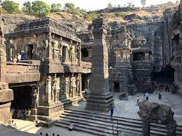
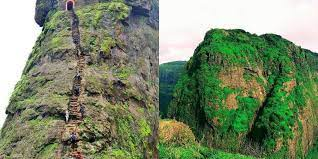
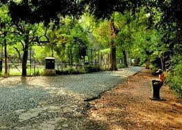

Explore Beautiful Maharashtra
Beaches
Beaches are coastal landforms characterized by the presence of sand or pebbles along the shoreline. They are formed by the accumulation of sediment deposited by waves and currents

Caves
aves are natural underground spaces formed through geological processes like erosion, dissolution of rock, or volcanic activity. They come in various types like limestone caves, lava tubes, and glacier caves

Fort
Forts are fortified structures built for military defense, often featuring walls, towers, and other defensive mechanisms.

Gardens
Gardens are outdoor spaces cultivated for growing plants, flowers, and sometimes food. They can be ornamental, featuring a variety of flowers and landscaping elements, or practical, with vegetables, fruits, and herbs
Hill station
Hill stations are elevated areas, typically in mountainous regions, known for their cool climate and scenic beauty. They serve as popular tourist destinations, offering opportunities for outdoor activities like trekking, hiking, and camping.
Lakes
Lakes are large bodies of water surrounded by land, formed by natural processes like glacial movement, volcanic activity, or tectonic shifts. They vary in size and depth and are vital habitats for diverse aquatic life
Temple
Temples are sacred places of worship found in various cultures and religions worldwide. They serve as centers for rituals, meditation, and communal gatherings, often featuring intricate architecture and designs